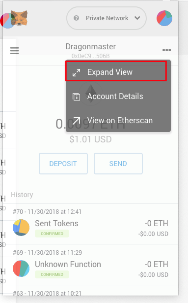

How to import ETH wallet from Metamask to Cyb
by savetheales on 2018-12-06
by @savetheales

Hi everyone! Today we’ll take one giant step to regular Cyb using.
At this time import of account is available just with the private key. All private keys are encrypted and stored at local storage.
Disclaimer: Cyb in Ethereum Mainnet may not be secure yet. We recommend to operate accounts with small balance at your own risk.
After successful installation and launching of the latest version Cyb you should see the screen like this:

Type in a search field wallet.cyb or click on the wallet button.
Cyb will offer you to create the password. Create and confirm it. And PLEASE store that. This is your key to Cyb.

Click Create.

Cyb had created the ETH account already, but we want to import own account from metamask.
So, go to your browser with a metamask extension, in my case, this is FireFox and click on a metamask icon.
Click on a ... and then Expand View

Click on DETAILS button.

After that click on EXPORT PRIVATE KEY button, before metamask presented your private key it asks you for a metamask password. Type it.
Now you can see:

Copy your private key to clipboard and go back to pure web3 browser ;) I mean Cyb.
Click on IMPORT ACCOUNT tab and paste your private key into the requested field.

Your account should be visible now in your wallet.

To activate an account address and use it for transactions click on MAKE MAIN button

Done! Now your operations will go through this account!